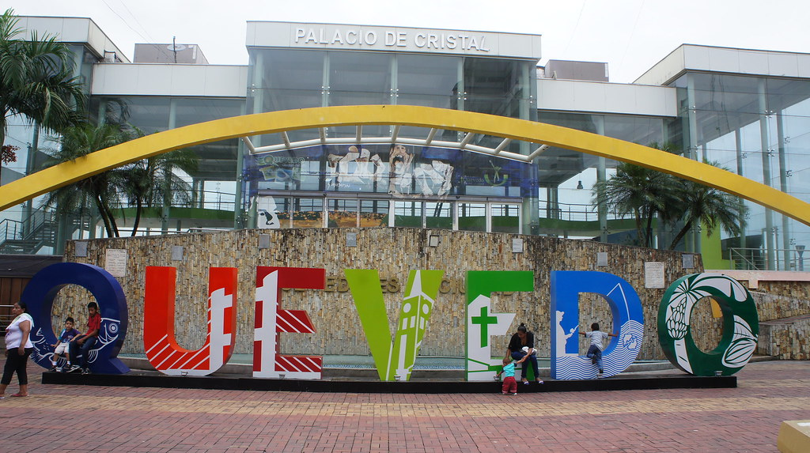
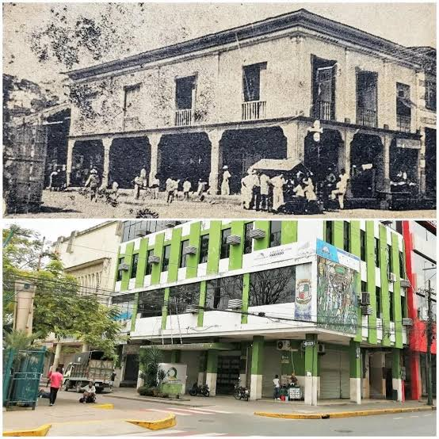
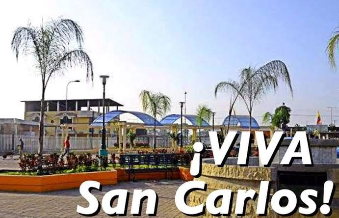
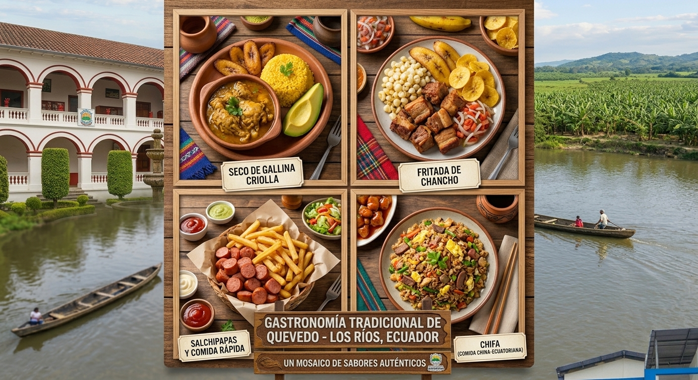
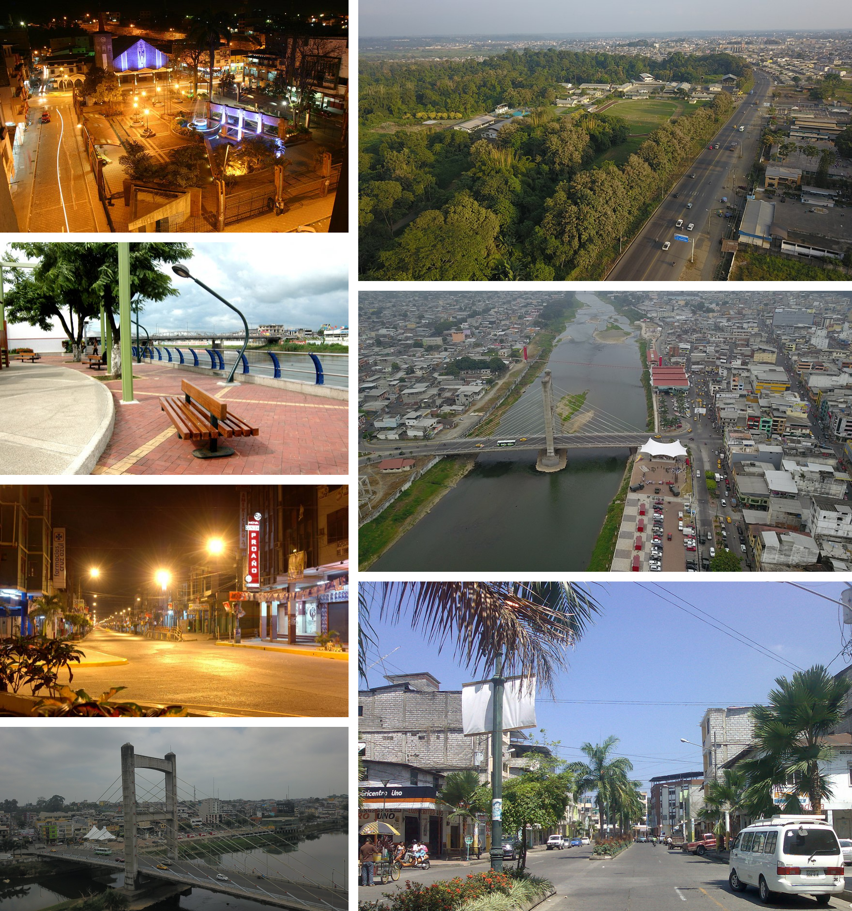
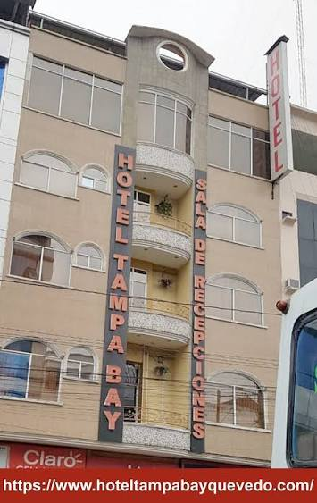
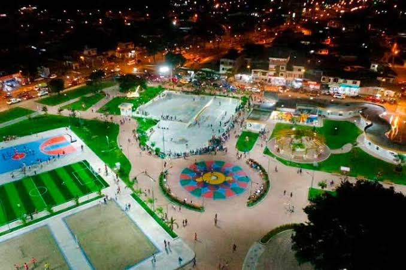

Autoridades

Alcalde: Alexis Matute

Bienvenido a la página oficial del cantón Quevedo. Situado estratégicamente en el centro del Ecuador, es un motor económico gracias a su intenso comercio, agricultura de exportación y la calidez de su gente.

Originalmente poblado por la cultura Milagro-Quevedo. Su desarrollo despegó con la agricultura. El 7 de octubre de 1943 fue oficialmente cantonizado, convirtiéndose pronto en un centro neurálgico para el país.

Quevedo tiene una importante división administrativa urbana y rural:

La culinaria de Quevedo es diversa debido a la inmigración. No te puedes perder:

Destacan el Río Quevedo y su malecón, el icónico Puente Velasco Ibarra, parques como el Central y zonas de recreación natural en las afueras.

Dada su importancia comercial, Quevedo ofrece una excelente infraestructura hotelera, con opciones que van desde hoteles de lujo y negocios hasta hostales cómodos y accesibles.
Alcalde: Alexis Matute

Es uno de los cantones más poblados de la provincia, con más de 200,000 habitantes, caracterizándose por ser una ciudad joven y muy dinámica.
Se localiza en el centro-norte de la provincia de Los Ríos, en el corazón del litoral ecuatoriano, siendo un cruce de carreteras vital entre Quito, Guayaquil y Manta.